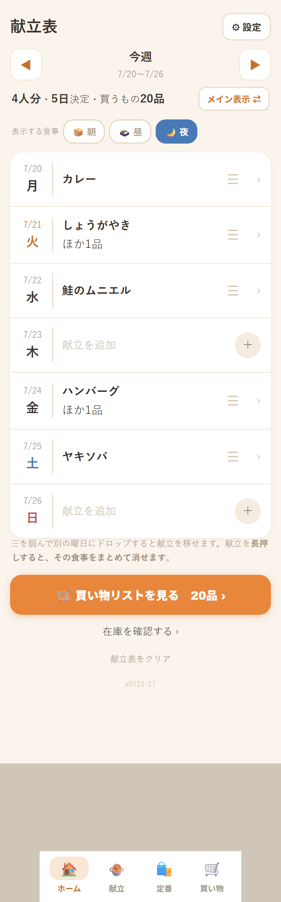
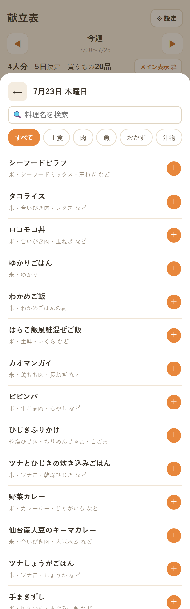
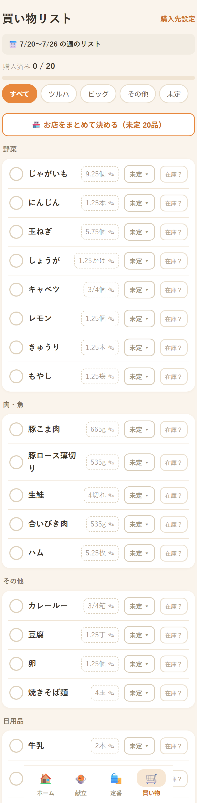
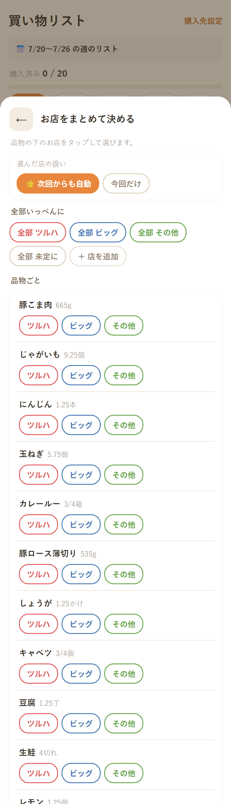
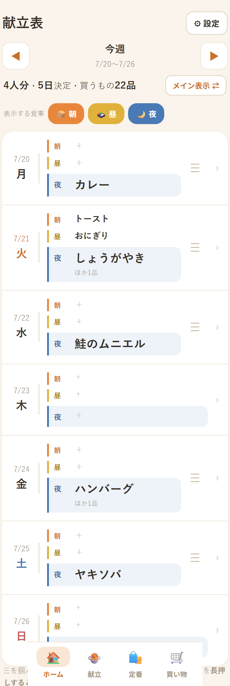
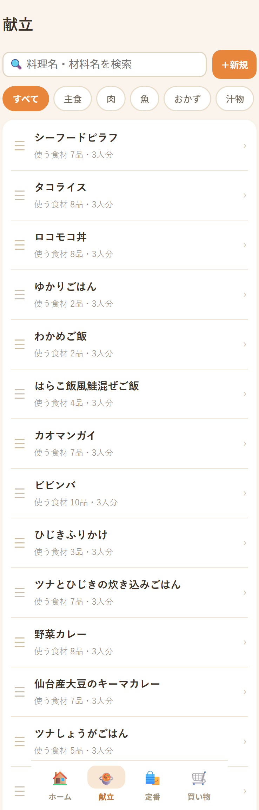
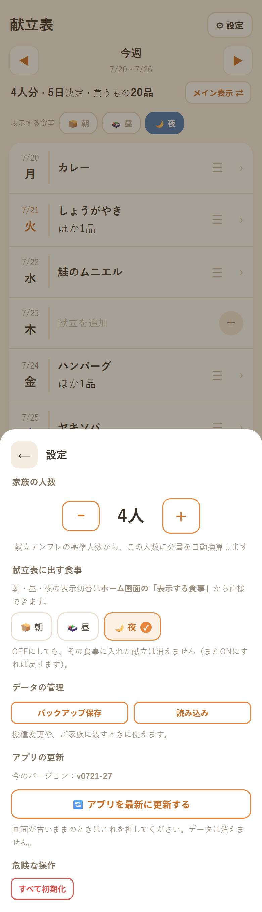

このアプリでできること
- 1週間の献立をカレンダーに入れる
- 必要な材料が自動で合算されて買い物リストになる（じゃがいも 2個＋3個＝5個）
- 家族の人数に合わせて分量が自動計算される
- 「これはツルハ、これはビッグ」とお店ごとに振り分けできる
- データはスマホの中だけに保存。登録もログインも不要、無料です
1. まずやること
アプリはインストール不要です。リンクを開けばすぐ使えます。ただし毎回リンクを探すのは面倒なので、ホーム画面に置くのがおすすめです。
iPhone
ホーム画面に追加する
- Safariでアプリを開く
- 下の共有ボタン（□に↑）をタップ
- 「ホーム画面に追加」を選ぶ
Android
ホーム画面に追加する
- Chromeでアプリを開く
- 右上の「⋮」をタップ
- 「ホーム画面に追加」を選ぶ
追加すると普通のアプリのように開けて、電波が無くても使えます（スーパーの中でも安心）。
2. 献立を決める
STEP 1
曜日をタップする
最初の画面が1週間の献立表です。献立を入れたい曜日をタップします。

これがホーム画面。曜日をタップして献立を入れていきます
STEP 2
料理を選ぶ
約230品の料理が最初から入っています。「＋」を押すだけでその日の献立になります。
- 上のカテゴリ（主食・肉・魚・汁物など）で絞り込めます
- 検索でも探せます（料理名でも材料名でもOK）
- 果物やヨーグルトなど切って出すだけの物は「そのまま」カテゴリに
- 1日に何品でも入れられます（メイン＋汁物＋副菜など）

「＋」を押すだけ。減らしたいときは「−」で減らせます
間違えて入れすぎたときは、献立表でその料理を長押しすると、その日の分をまとめて消せます。
3. 買い物リストを作る
STEP 3
ボタンを1回押すだけ
献立が決まったら、下の「🛒 買い物リストを見る」を押します。材料が自動で合算されたリストができます。

野菜・肉魚・その他に分かれて表示されます
- 同じ材料は足し算されます（玉ねぎ 1個＋2個＝3個）
- 家族の人数に合わせて分量が調整されます
- 家にある物は「在庫あり」を押すと買い物から外れます
- 数量をタップすれば自分で変更できます
しょうゆ・砂糖などの調味料は、毎回リストに並ぶと邪魔なので、リストの下の
「調味料・常備品」コーナーにまとめてあります。家を見て「切れてる！」と思った物だけタップすると、
「しょうゆ 1本」としてリストに入ります。
お米も同じく除外されていて、買いたい週だけ「今週は買う」を押します。
4. お店ごとに振り分ける
STEP 4
「どこで買うか」を決める
買い物リストの「🏪 お店をまとめて決める」を押すと、品物ごとにお店を選べます。

ポンポン押すだけ。「全部ツルハ」などの一括ボタンもあります
- 一度選んだお店は記憶されて、次回から自動で振り分けられます
- 「今回だけ」に切り替えれば、記憶せず一時的に変更できます
- お店は「＋店を追加」で自由に増やせます
5. 買い物に行く
お店に着いたら、上のお店のタブを選びます。そのお店で買う物だけが表示されるので、
カゴに入れたら丸をタップしてチェック。全部買い終わったら「買い物を完了」を押します。
完了するとリストは空になりますが、献立表は残ります。「先週なに食べたっけ？」は、
献立表の◀▶で過去の週を見返せます。
6. 慣れてきたら
いつも買う物を登録する（定番）
牛乳・パン・トイレットペーパーなど、献立に関係なく買う物は「定番」タブに登録します。
 個数も指定できます。⭐を付けると毎回自動でリストに入ります
個数も指定できます。⭐を付けると毎回自動でリストに入ります
- タップで選択 → 「−」「＋」で個数を決める
- ⭐毎回買うにすると、リストを作るたび自動で入ります
- 「＋カタログ」から約300品の中から選べます（別名でも検索できます）
朝ごはん・お弁当も管理する
最初は夜ごはんだけが表示されています。献立表の「表示する食事」で
🍞朝・🍱昼をONにすると、1日が3段になります。

使う食事だけONに。夜は大きく表示されて見つけやすくなっています
献立を自分好みにする

料理をタップすると材料や分量を編集できます
- 材料・分量を自由に書き換えられます（我が家の味に）
- 「コピーを作る」で「カレー（食べ盛り）」など増量版が作れます
- 「＋新規」でオリジナル料理を登録できます
- レシピのURLやメモも保存できます
家族の人数を変える

右上の「⚙ 設定」から。分量が自動で計算し直されます
よくある質問
Q. お金はかかりますか？
かかりません。広告もありません。
Q. 登録やログインは必要？
不要です。リンクを開けばすぐ使えます。
Q. データはどこに保存される？
お使いのスマホの中だけです。インターネット上には一切送られないので、
献立や買い物の内容が外に出ることはありません。
Q. スマホとパソコンでデータは共有されますか？
共有されません（端末ごとに別々です）。移したいときは
⚙設定 →「バックアップ保存」でファイルを保存し、
もう一方の端末で「読み込み」してください。
Q. 機種変更したらデータは消える？
消えます。事前に ⚙設定 →「バックアップ保存」でファイルを保存し、
新しい端末で読み込んでください。
Q. 電波がなくても使える？
使えます。一度開いておけば、圏外でも買い物リストを見られます。
Q. 画面が古いまま更新されない
⚙設定 → 「🔄 アプリを最新に更新する」を押してください。データは消えません。
Q. 間違えて消してしまった
献立表の献立は、その日をタップして選び直せます。
全部やり直したいときは ⚙設定 →「すべて初期化」（元に戻せませんのでご注意を）。